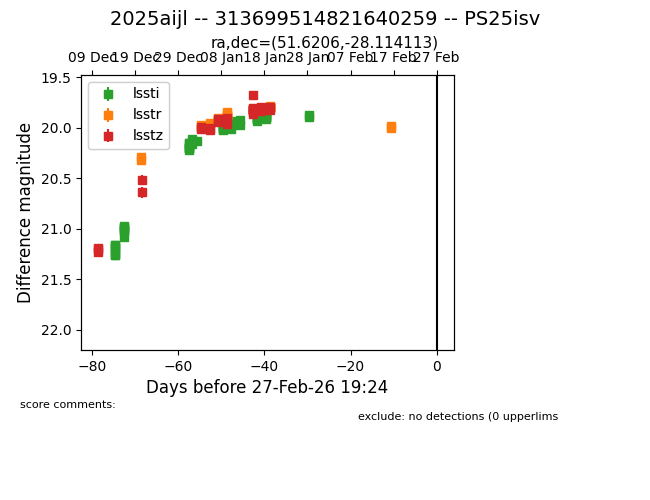
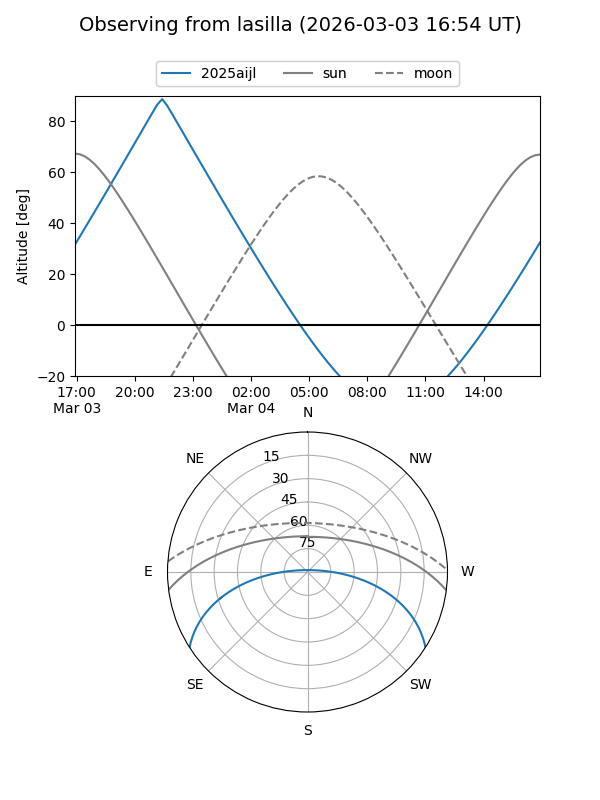
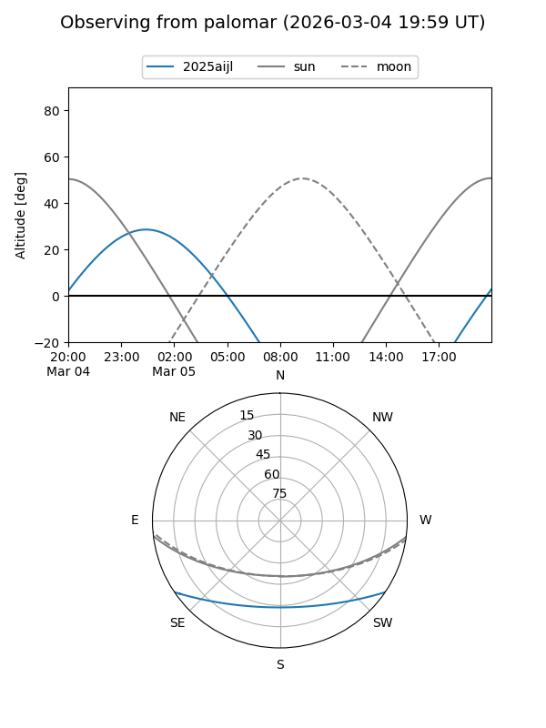

2025aijl
Target 2025aijl at 2026-02-27 19:25
Aliases and brokers:
TNS: link
YSE: link
alt names
313699514821640259 (lsst,fink_lsst)
2025aijl (tns,yse)
PS25isv (panstarrs)
Coordinates:
equatorial (ra, dec) = 51.6206,-28.11411
equatorial (HMS+DMS) = 03:26:28.93,-28:06:50.81
galactic (l, b) = (223.7762,-55.78882)
Flags:
Photometry:
last lssti=19.89, lsstr=20.01, lsstz=19.82
57 lssti, 30 lsstr, 28 lsstz detections
Lightcurve

Visibility


Additional plots